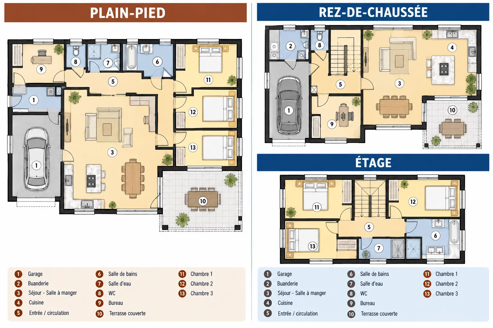
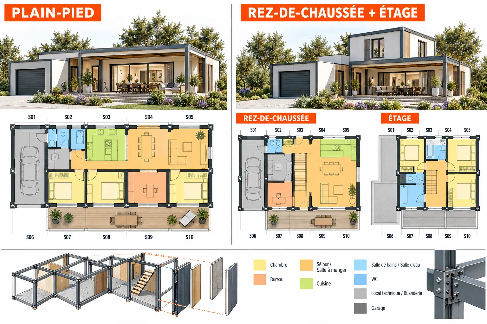

Le plan suit librement la forme du terrain. Les murs, planchers, charpente et réseaux sont réalisés principalement sur le chantier.
Plain-pied : séparation jour/nuit, circulation simple et terrasse directement accessible.
À étage : emprise au sol réduite ; séjour, bureau et garage en bas ; chambres et pièces d’eau en haut.
Adaptée à : architecture locale, parcelle accessible et personnalisation poussée.

Étude conceptuelle — distribution et dimensions à reprendre par un architecte.
Solution 02
Cube béton hybride
Le programme est découpé en modules répétitifs, panneaux et cadres. Les chambres utilisent des volumes CUBE, les pièces humides des POD et le séjour une combinaison FRAME + WALL + SLAB.
Plain-pied : modules organisés en L autour de la pièce de vie et de la terrasse.
À étage : noyau technique et escalier centrés pour aligner les réseaux entre les niveaux.
Adaptée à : recherche d’inertie, de robustesse et de préfabrication contrôlée.
Découpage modulaire indicatif — masses, joints et levage à calculer.
Solution 03
Structure métallique volumétrique
La maison utilise des travées transportables avec assemblages secs. Les cadres associés ouvrent le séjour tandis que les chambres restent dans une trame répétitive.
Plain-pied : assemblage linéaire ou en L, facilement extensible par une travée supplémentaire.
À étage : modules superposés avec alignement des poteaux, des gaines et de l’escalier.
Adaptée à : chantier rapide, poids réduit et préfinitions importantes en atelier.

Trame métallique indicative — sections et assemblages soumis au calcul.
Études ASENAMODUL
Avant-projets originaux
Des études propres à ASENAMODUL, présentées pour comparer les architectures et systèmes constructifs.
AVP 01
ÉLÉA 112 Terrasse
R+1 · toit plat · terrasse au premier étage
AVP 02
ÉLÉA 112 Tradition
R+1 · charpente et tuiles · terrasse au premier étage
AVP 04
M130 Steel
Structure métallique · plain-pied ou étage
Dossier original en préparation
Le futur dossier ÉLÉA 112 présentera les principes architecturaux, le découpage modulaire et les points techniques à étudier.
Document conceptuel non exécutable. Validation obligatoire par un architecte et les bureaux d’études compétents.
Le calendrier complet comprend la conception, les études, les autorisations, la fabrication ou le gros œuvre, les raccordements et les finitions.
Traditionnelle
Environ 9 à 14 mois de travaux
Préparation technique1 à 3 mois
Fondations et gros œuvre3 à 5 mois
Hors d’eau / hors d’air2 à 3 mois
Second œuvre et finitions3 à 5 mois
Les phases se suivent davantage et restent sensibles aux intempéries et à la coordination des entreprises.
Cube béton hybride
Objectif global : 4 à 7 mois
Études industrielles figées6 à 12 semaines
Usine + fondations en parallèle4 à 8 semaines
Structure et toiture1 à 3 jours*
Raccords et finitions3 à 8 semaines
*Objectif pour un modèle mature et un terrain prêt. Il doit être mesuré sur les prototypes M130 avant d’être garanti.
Structure métallique
Objectif global : 4 à 6 mois
Études et plans de fabrication6 à 10 semaines
Usine + fondations en parallèle4 à 8 semaines
Levage et assemblage1 à 3 jours*
Raccords et finitions2 à 6 semaines
*Sous réserve d’accès, de météo, de grue, de transport, de contrôles et d’un haut niveau de préfabrication.
Ces durées sont des fourchettes de programmation, pas des engagements contractuels. Elles varient selon le terrain, le modèle, la commune, les études, le niveau de finition, la disponibilité des fabricants, le transport et les entreprises retenues.
Transformer votre plan
Vous avez déjà un dessin ou un plan de maison ?
ASENAMODUL peut comparer son adaptation en traditionnel, béton hybride et structure métallique.